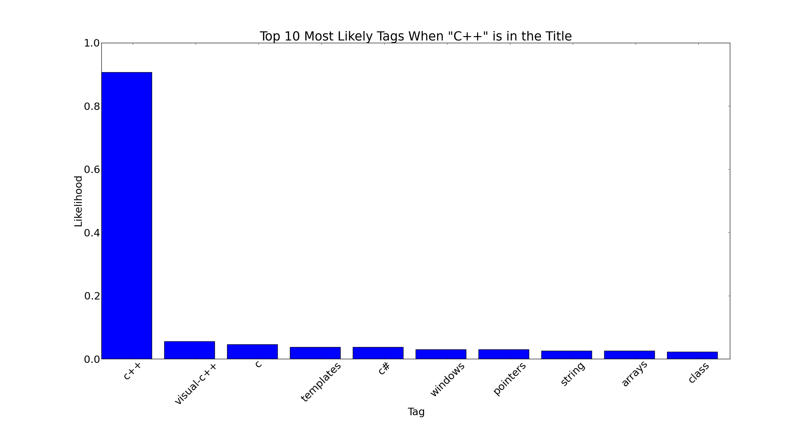
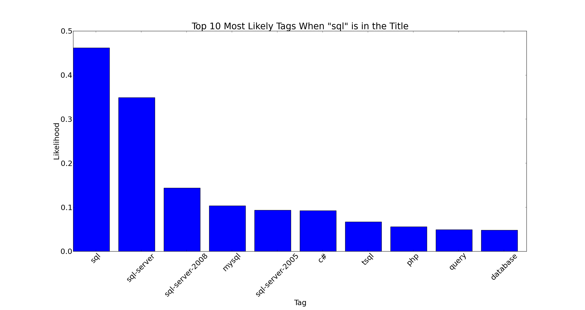
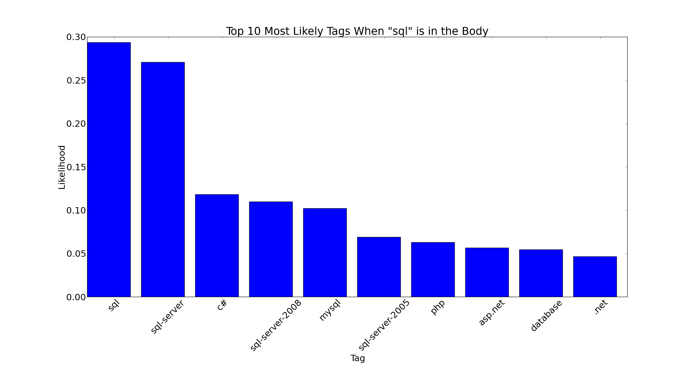
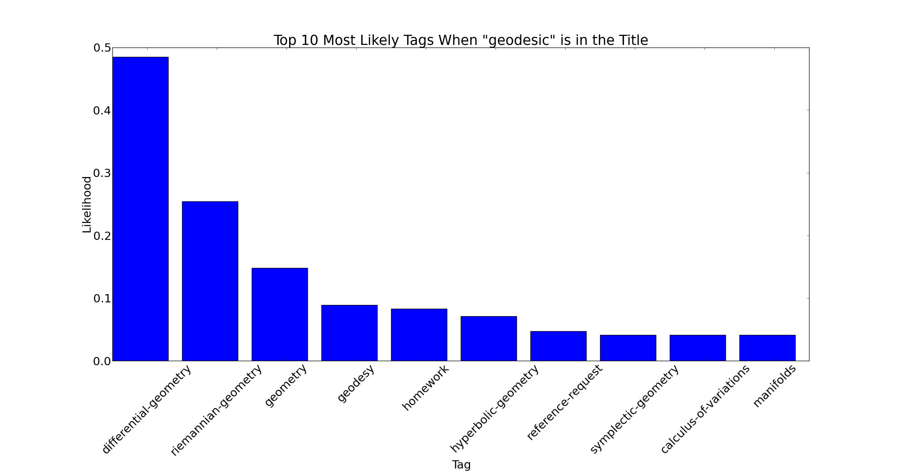

- on Sat 05 October 2013
Category: Kaggle-Competitions NLP
Implementing the association rule algorithm
As stated earlier, words in post titles and words in post bodies are fundamentally different with respect to their influence on the tags that are assigned to that post. So for this reason, two sets of association rules will be generated - title-tag association rules and body-tag association rules.
Since the dataset is so large, steps must be taken to make sure that we don't run out of RAM. We can do this by importing the dataset line-by-line such that only one line of the dataset is held in main memory at any one time before it is exported to another csv file. The association rule algorithm can be implemented in the following steps.
- Find All Combinations: The first step is to find all combinations of words (title or body words depending on which set of rules you are finding) and tags that appear in the same posts. The list of all combinations will be huge! Mine came to about 13GB which would definitely generate a memory error if you were to hold it all in main memory, so each combination must be exported sequentially into another csv file.
- Count All Combinations: Now you must import that huge list of all combinations and count the number of times each distinct combination appears in the list. The counts must be held in main memory, but since you are only holding the counts of each distinct combination, it will be much smaller than 13GB (mine came to about 1.5GB). Now you have \(|Co(A,B)|\) for all words \(A\) and tags \(B\)!
- Count Overall Word Occurrences: Next, in order to calculate the required probabilities, we need to count the number of occurrences of each word in the set of post titles (or bodies).
- Calculate Probabilities and Save as Dictionary: Now, since we have the word counts and the co-occurrence counts, we can calculate the required probability \(P(B|A)\) for each combination.
Code snippets
Here are a few snippets of python code to give us a better understanding of how the above steps can be implemented. The following snippet finds all combinations of words and tags
with open(r"input_file.csv") as r, open(r"output_file.csv", "w") as w:
rdr = csv.reader(r)
for row in rdr:
a=row[0]
b=row[1]
for x, y in product(a.split(), b.split()):
w.write("{},{}\n".format(x, y))
where a is a string containing the title (or body) of a post and b is a string containing the list of tags for that post. Also, the product() function is part of the python itertools package which would need to be imported. This next snippet shows how the combinations are then counted.
counter={}
with open("output_file.csv",'rb') as file_name:
reader=csv.reader(file_name)
for row in reader:
pair=row[0]+' '+row[1]
if pair in counter:
counter[pair]+=1
else:
counter[pair]=1
where counter is a dictionary whose key is a word/tag pair and its value is the count of the number of times they co-occur. All of the other steps in the algorithm can be implemented by modifying these two code snippets in some way.
Some results
Here are some examples of probability distributions \(P(B|A)\) for different words \(A\).
The first of the following plots shows the top 10 most likely tags when the word "C++" appears in a post title and the second plot shows the top 10 most likely tags when "C++" appears in a post body.


As one might expect, the most likely tag (by a large margin) is "c++". It is also interesting to see that the likelihoods are significantly larger for when "C++" appears in the title. This makes sense intuitively because titles are short and succinct and therefore each title word should generally be more descriptive of the overall post than a word in the post body.
The next set of plot is for the word "sql".
 
What is interesting about these tag likelihoods is that there is not a clear winner. The tags "sql" and "sql-server" are both quite likely.
The next set of plot is for the more obscure word "geodesic".


There are several interesting differences with these plots. The first is that the actual post word "geodesic" is not in the top ten most likely tags (it is probably not even in the set of possible tags). Another difference is that the tag likelihoods are actually larger when "geodesic" appears in the post body. This is probably because "geodesic" is a more obscure word than "C++" and "sql".
The next step is to use these association rules to make predictions. Stay tuned...